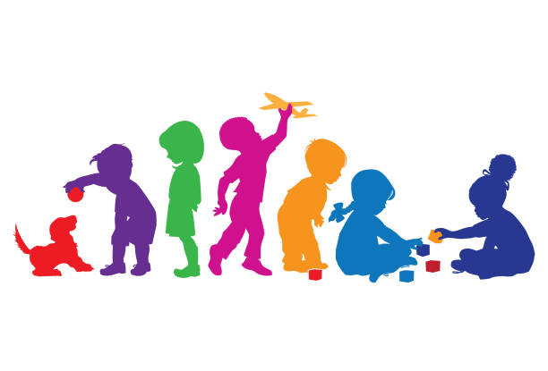

Choosing the right setting for your child’s early education is one of the biggest decisions you will make as a parent. For many families in Manchester, Lemon Tree Preschool has become a trusted choice because it combines a safe learning environment for toddlers, highly experienced staff, and a curriculum that supports early development.
Whether you are weighing up preschool options for children aged 2–5 in Manchester or just beginning your search, this guide explains what makes Lemon Tree special and why so many Manchester preschool parents recommend it. You can learn more about our ethos on the About Us page.
What Makes Lemon Tree Preschool Stand Out in Manchester
When you walk into Lemon Tree Preschool, you will quickly feel the difference. The preschool’s ethos reflects a clear focus on every child’s individuality and holistic growth, rooted in play and exploration rather than rigid routines. It has been serving Greater Manchester families since 2015 with strong ties to the local community and a bilingual approach that supports diversity. You can explore more about our teaching philosophy on our Curriculum page.
Importantly, Lemon Tree is Ofsted registered and rated Good, showing that it meets UK government standards for care and early education. Many parents choose this setting because it feels both nurturing and academically supportive, striking a balance between laughter‑filled play and structured learning. For insights into our daily activities, check our Daily Routine section.
A Safe and Stimulating Environment for Children
Safety is high on every parent’s list when choosing a preschool. At Lemon Tree Preschool, stringent safety measures are in place, including controlled access, CCTV monitoring, and first aid-trained staff, giving parents confidence in their choice. For full details, visit our Health & Safety page.

The facilities are child-friendly and designed with imaginative play in mind, from creative art corners to indoor and outdoor activity areas. Children learn by doing, building social skills and confidence in a place where curiosity is welcomed. Parents often notice how children engage easily with sensory play and interactive learning stations, helping develop fine motor skills and early language abilities. You can view examples of our spaces in the Gallery.
Experienced and Caring Staff at Lemon Tree Preschool
A big reason why parents trust Lemon Tree Preschool is the expertise of its team. While official qualification data for this setting is not publicly listed, UK early years statistics show that 79 percent of staff in private and voluntary settings have a level 2, 3, or higher early years qualification, indicating a strong professional standard across the sector.
At Lemon Tree, staff focus on attentive, child-centred care. Teachers get to know each child’s interests, creating a sense of trust that helps young children settle quickly. Parents can meet the team on our Staff page. When children feel secure and supported, they engage more readily with learning activities, setting the stage for our flexible programs.
Flexible Programs Designed for Busy Manchester Parents
Modern family life can be hectic, especially for working parents. Lemon Tree Preschool offers flexible options so families can find a schedule that suits them. Morning sessions, afternoon play times, full-day care, and extended hours all help parents manage work and home life smoothly. For more details, see Sessions & Fees.
These flexible programs also mean children experience continuity in care and learning. Many parents report that flexible scheduling allows less disruption for their child, who builds friendships and routines that feel familiar and reassuring. Parents often consult our Application Form when enrolling children to secure their preferred schedule.
Enriching Curriculum That Supports Early Development
Quality early years education in the UK is guided by the Early Years Foundation Stage (EYFS) framework, which focuses on personal, social, and emotional development as well as early literacy and numeracy. At Lemon Tree Preschool, this framework is woven into daily activities that feel natural and fun for children.
Children take part in group storytelling, basic counting games, and play that encourages communication. These activities build language skills and problem-solving, helping children to be ready for reception classes at primary school. Research shows that high-quality early years settings are essential for later school success, helping children develop confidence and learning abilities before formal education begins.

Engaging Activities and Extra Opportunities
Beyond core learning, Lemon Tree Preschool includes enriching experiences like arts and crafts, music time, and seasonal celebrations that make learning joyful. Parents often share memories from events like cultural days or mini performances where children express themselves and build confidence.
These activities also help children bond with others, fostering crucial social skills for school readiness.
Parent Involvement and Communication
Keeping parents informed is a cornerstone of preschool success. Teachers share updates on your child’s progress through daily chats, regular meetings, and digital platforms, helping you stay connected with their development. Parents often comment on how this partnership allows them to continue learning at home.
Comparing Lemon Tree Preschool to Other Manchester Preschools
Understanding how Lemon Tree Preschool compares to other local settings can help when narrowing down choices. The table below summarises key features:
|
Feature |
Lemon Tree Preschool |
Typical Manchester Private Preschool |
|
Ofsted Rating |
Good |
Varies by provider |
|
Play-based Learning |
Yes |
Often yes |
|
Flexible Hours |
Yes |
Varies |
|
Safety Measures |
CCTV, First Aid trained staff |
Varies |
|
Parent Communication |
Regular updates |
Varies by setting |
This comparison gives a snapshot of why parents in Manchester choose Lemon Tree Preschool, especially those juggling work and family life. For additional insights, parents can read Parent Feedback.
Final Thoughts
Choosing the right preschool matters because these early years shape confidence, curiosity, and a love of learning. Lemon Tree Preschool has won the trust of many Manchester preschool parents because it blends a safe learning environment for toddlers, flexible programmes, and a friendly community atmosphere.
If you are exploring preschool options in Manchester, consider visiting the preschool and meeting the staff to experience the environment firsthand. This first step could make all the difference in your child’s early foundation.
FAQs
What age does Lemon Tree Preschool accept?
Lemon Tree Preschool welcomes children typically between 2 and 5 years old. Eligibility for government-funded childcare depends on the child’s age and the parents’ individual circumstances.
How safe is Lemon Tree Preschool in Manchester?
Safety is a top priority at Lemon Tree Preschool, with controlled access, CCTV monitoring, and all staff trained in first aid. Children are cared for in a secure and nurturing environment.
What curriculum does Lemon Tree Preschool follow?
The preschool follows the UK Early Years Foundation Stage (EYFS) framework. Play-based and structured learning activities help children develop literacy, numeracy, social skills, and confidence for primary school.
Are parents involved in preschool activities?
Yes, teachers maintain open communication with parents through regular updates and meetings. Families are encouraged to participate in their child’s learning journey and stay connected with progress.
How do I enrol my child?
Parents can secure a place by completing the Registration Form. Staff are available to guide families through the enrolment process and answer any queries.